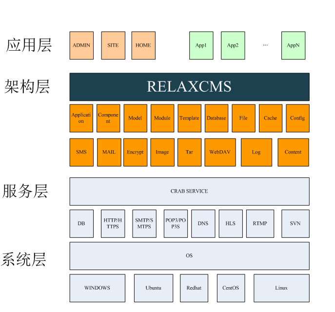

RelaxCMS简介 版本：0.11.7 / 更新时间：2025.10.21
前言
本文主要介绍系统架构、系统特性、开发环境、运行环境、构建编译、模板制作。主要阅读对象为二次开发人员。
注1：本文档内容依据版本变化将会即时修订，当手册描述与软件实现不一致时，请下载或登录系统查看与软件版本一致的最新手册。
系统简介
RelaxCMS（简称：RC）是一款基于PHP语言编写开发的轻量级内容管理系统。系统采用面向对象程序设计思想与CMT（组件Component、模型Model、模板Template）设计模式设计实现，能使数据、控制与显示分离，代码与功能模块复用性强，逻辑结构清晰，极大提高了系统的可复用性，易维护性与可扩展性。该系统主要适用于构建WEB应用系统，如：电商平台、WEB管控、WEB门户及后端API接口服务等。
系统架构

系统架构
系统特点
跨平台
系统主要使用PHP语言编定，支持：LINUX、WINDOWS等PHP可以部署的操作系统平台。
多数据库
支持：PDO/MYSQL/SQLITE/POSTGRESQL/MONGODB/MSSQL/ORACLE
多语言
支持多语种国际化：中文（简、繁）、英语等
可扩展
支持第三方应用扩展安装。
多模板
支持多模板布局
多主题
支持多主题风格
开发环境
PHP/MYSQL运行环境
类LAPM集成环境，如LAPM、CRAB; 推荐使用CRAB搭建服务器环境。源码下载
RELAXCMS 官网
https://www.relaxcms.comRELAXCMS 官网下载
svn co https://www.relaxcms.com/svn/relaxcmsGITHUB下载
git clone https://github.com/relaxcms/relaxcms.git
在线演示
https://demo.relaxcms.com
安装与更新
一键安装
– 在LINUX环境下一键安装（CRAB+RC），推荐使用Ubuntu 16.04/18.04 Server LTS
if [ -f /usr/bin/curl ];then curl -sSLO https://www.relaxcms.com/install/install.sh;else wget -O install.sh https://www.relaxcms.com/install/install.sh;fi;bash install.sh
– 注：默认安装RelaxCMS官网发布的最新稳定版本
一键更新
– 一键更新RC适用于RC已安装好，想把RC升级到更新版本，不跨版本，如0.9.0.0升级0.9.0.123，可以在RC的安装目录下，如：/opt/crab/var/www执行以下一键更新RC命令：
if [ -f /usr/bin/curl ];then curl -sSLO https://www.relaxcms.com/install/update.sh;else wget -O update.sh https://www.relaxcms.com/install/update.sh;fi;bash update.sh
– 注：一键更新RC,须在RC部署目录下执行
一键升级
– 一键升级RC适用于RC已安装好，想把RC升级到更新版本，可跨版本，如0.9.0.0升级0.10.0.123，可以在RC的安装目录下，如：/opt/crab/var/www执行以下一键升级RC命令：
if [ -f /usr/bin/curl ];then curl -sSLO https://www.relaxcms.com/install/upgrade.sh;else wget -O upgrade.sh https://www.relaxcms.com/install/upgrade.sh;fi;bash upgrade.sh– 注：一键升级RC,须在RC部署目录下执行 – 注：等同RC的安装目录/opt/crab/var/www/bin下执行: ./upgrade.sh (版本：0.9.0以上)
下载安装
– 从RelaxCMS官网下载RelaxCMS 最新版本
RelaxCMS版本：relaxcms-<VERSION>.tar.gz，下载后，解压安装，./setup.sh命令安装。源码目录结构说明
src/
- apps 应用目录
|
|- admin
|- components 应用组件
|- database 应用数据库
|- docs 应用文档
|- i18n 应用国际化配置
|- includes 应用菜单
|- models 应用模型
|- templates 应用模板
|- config.php 应用配置
|_ admin.php 应用类，名称格式：名称+.php，必须从CApplication派生
- docs 文档
- lib 库(核心架构类库）
|- classes 类
|- model 内置模型
|- modules 内置模块
|- templates 内置模板
- modules 扩展模块
- templates 扩展模板
- public WEB公开及静态文件，通用DocumentRoot设置为此目录
- supports 第三方库
- cache 缓存
- config 配置
- data 数据